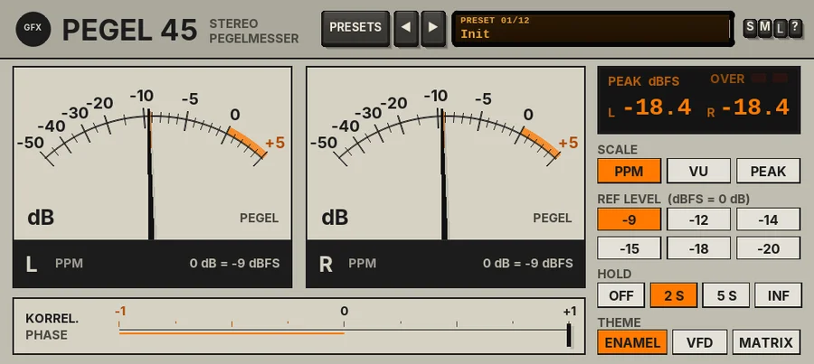

Pegel 45
A stereo level meter with PPM, VU and peak scales, peak hold, a phase correlation meter and three faceplates.

Overview
Pegel 45 is a stereo level meter in the spirit of the 1980s and 90s Eastern European broadcast and studio test gear: baked-enamel needle meters, vacuum-fluorescent bargraphs and chunky LED ladders. It only listens. The audio passes through bit for bit unchanged, with no latency, so you can leave it on any track or on the master without it touching the sound.
It has three scales. PPM is a quasi-peak programme meter of the broadcast kind: it rises fast and falls slowly, so it shows how loud the peaks really feel. VU is the classic volume indicator with a weighted needle that shows the average level, the way the ear hears loudness. PEAK shows the sample peaks in dBFS. Below the meters a KORREL. meter shows the phase correlation between left and right, so you can see at a glance whether a mix is safe in mono.
All readings are referenced to a sine: a sine whose peak sits at the REF level reads 0 dB (PPM) or 0 VU. There is no DRIFT and no output stage: a meter has nothing to colour.
Reach for it for
- Lining up levels for broadcast and mastering
- Gain staging tracks and buses on a VU scale
- Watching sample peaks and overs on the master
- Checking mono compatibility with the correlation meter
- A good-looking meter to keep open while you mix
Controls
Every control is a lit key: click it. The choice is saved with the project and in presets.
The header
- PRESETS
- Opens the preset list (or click the display).
- ◄ / ►
- Step through the presets.
- Preset display
- Shows the preset number and name. Click it for the list.
- S / M / L
- Panel size: small, medium or large. New instances open in L. The panel also scales to fit the plugin window.
- ?
- Opens a pop-up with the design credit, the GFX website address and the address of this manual. Click anywhere to close it.
Meters
Two meters, L and R. The ENAMEL face draws two needle meters with a safety-orange over-zone; VFD and MATRIX draw two horizontal bargraphs with the scale between them. Each shows the scale name and its alignment (for example 0 dB = -9 dBFS), and the bargraphs print the ballistics in the footer (INTEGR., ANSTIEG, RÜCKLAUF). Click a meter to clear the holds.
- PPM scale
- -50 to +5 dB, 0 dB = the REF level. A 10 ms tone burst reads 1 dB under the steady reading; the needle falls back 20 dB in 1.5 s.
- VU scale
- -20 to +3 VU, 0 VU = the REF level. The needle has mass and damping: it reaches its reading in about 300 ms with a tiny overshoot, and falls back just as smoothly.
- PEAK scale
- -60 to 0 dBFS, sample peak, instant rise and a smooth fall of 20 dB in 1.7 s. REF does not apply.
- Hold marker
- With HOLD on, an orange drag pointer (needles) or one bright segment (bargraphs) marks the highest reading, then falls back onto the meter.
KORREL. (PHASE)
- Correlation meter
- -1 to +1, averaged over about 200 ms. +1 is mono (L and R the same), 0 is wide or unrelated, and anything below 0 (the orange half) means the channels are out of phase and will lose level or tone when summed to mono.
PEAK dBFS readout
- L / R
- The true sample peak of each channel in dBFS, held for the HOLD time (with HOLD OFF the numbers still hold for 1 s so you can read them). Click the readout to clear it.
- OVER
- Two lamps that light when a channel reaches 0 dBFS or above.
SCALE
- PPM / VU / PEAK
- The scale for both meters (PPM by default). A new scale starts the holds afresh.
REF LEVEL
- -9 / -12 / -14 / -15 / -18 / -20
- The alignment level in dBFS: the level that reads 0 dB (PPM) or 0 VU. PPM and VU each keep their own setting: PPM -9 dBFS by default (the broadcast convention), VU -18 dBFS. The keys are greyed out on PEAK, which reads dBFS directly.
HOLD
- OFF / 2 S / 5 S / INF
- How long the hold markers and the PEAK readout hold the highest reading (2 S by default). INF holds until you click a meter or the readout.
THEME
- ENAMEL
- Bone-grey baked enamel, black needles and a safety-orange over-zone (the default).
- VFD
- A charcoal slate panel with turquoise vacuum-fluorescent bargraph segments; the unlit segments glow faintly. The over-zone is amber.
- MATRIX
- A battleship-grey panel with stacked LED blocks, green to amber to red, with the unlit cells showing.
The theme changes only the look; the readings are the same in all three.
Presets
Presets set the scale, both REF levels, the hold and the theme.
- Init
- PPM at -9 dBFS, 2 s hold, ENAMEL.
- Broadcast PPM -9
- PPM at -9 dBFS with a 5 s hold, ENAMEL.
- PPM Align -18
- PPM aligned to -18 dBFS, 2 s hold, VFD.
- Live Desk PPM -12
- PPM at -12 dBFS, 2 s hold, MATRIX.
- Tracking VU -18
- VU at -18 dBFS, no hold, ENAMEL.
- Mix VU -14
- VU at -14 dBFS, 2 s hold, ENAMEL.
- Hot Master VU -12
- VU at -12 dBFS for loud masters, 2 s hold, VFD.
- Mastering Peak
- Sample peak with an infinite hold, MATRIX.
- VFD Peak
- Sample peak, 2 s hold, VFD.
- VFD PPM
- PPM at -9 dBFS, 5 s hold, VFD.
- Matrix PPM
- PPM at -9 dBFS, 2 s hold, MATRIX.
- Matrix VU
- VU at -18 dBFS, no hold, MATRIX.
Tips
- For tracking, use VU at -18 dBFS and aim for the needle swinging around 0 VU: that leaves plenty of headroom and suits most analogue-modelled plug-ins.
- Use PEAK with HOLD INF on the master during a final pass, then read the highest peak from the readout.
- Keep an eye on KORREL. while you widen a mix: if it sits below 0, check the mix in mono.
- Because the audio is untouched, you can put Pegel 45 anywhere in a chain - before and after a compressor, for example, to compare levels.
File: gfx-pegel-45.jsfx